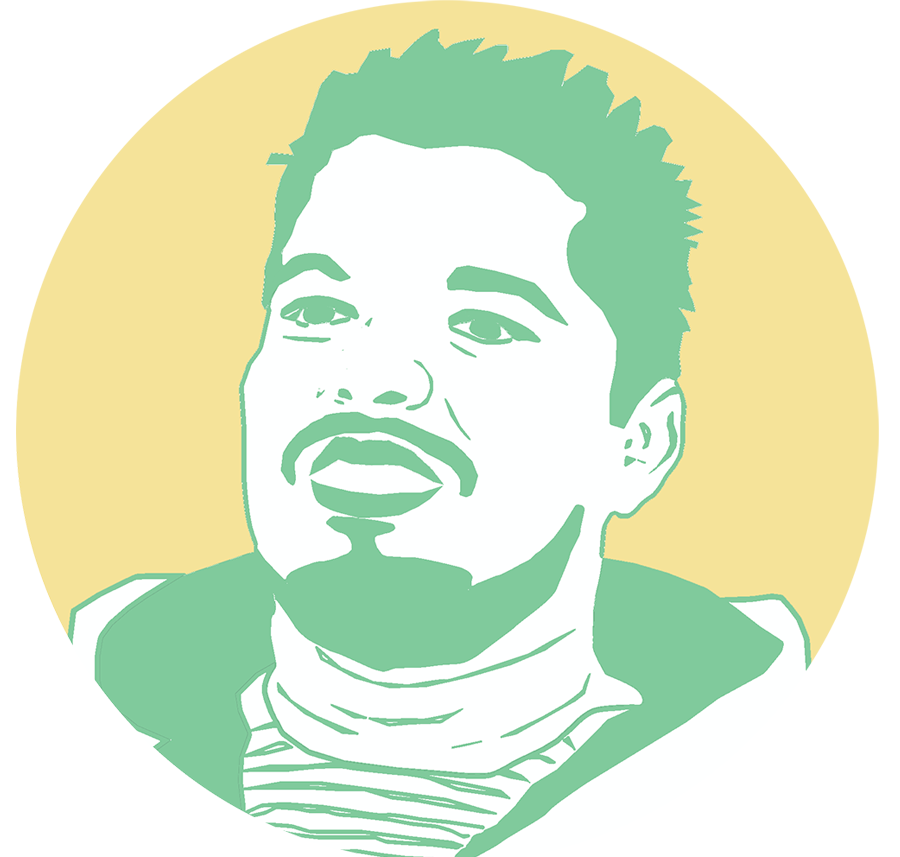
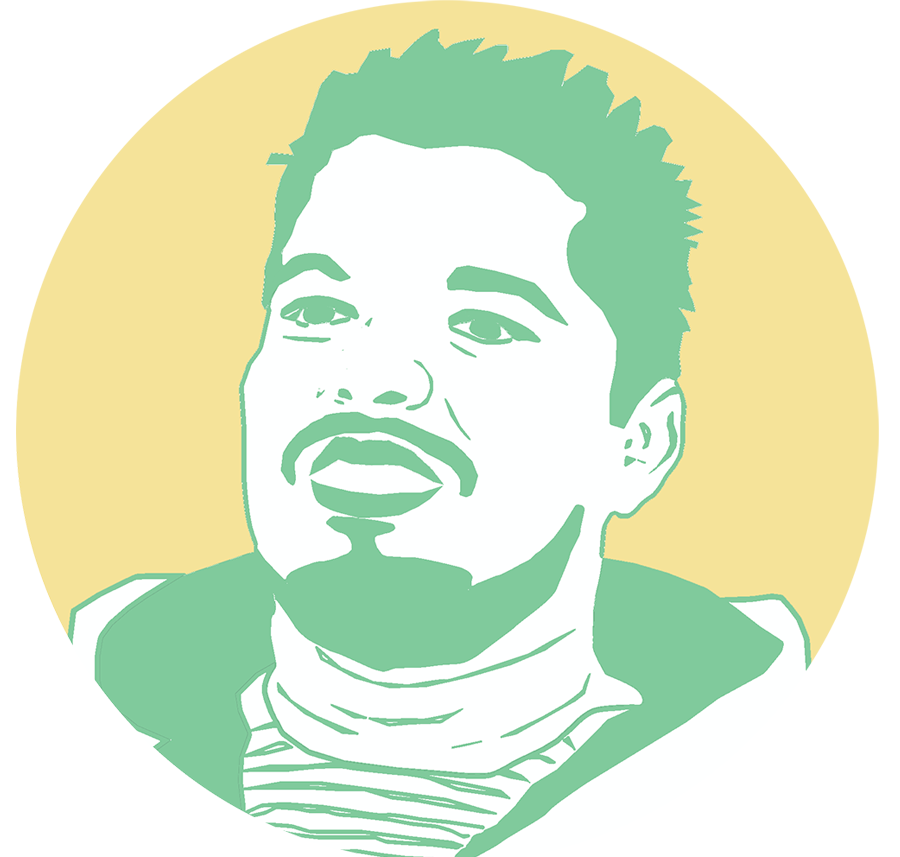

English | Español
How undocumented immigrants with terminal kidney failure fight to navigate a health care system that doesn’t acknowledge they exist?
By Noelia Gonzalez, Brett Murphy and Jieqian Zhang

America’s 11.3 million undocumented immigrants -- more so than any other group in the country -- struggle with health disparities. They don’t qualify for federal programs like Medicare; Their jobs don’t carry benefits; And years without primary care often lead to chronic illness. Emergency rooms are their only doctors.


Life-saving operations, like organ transplants, often fall out of reach for the undocumented; not because of their immigration status, but because of their wallet. They can’t pay. End-stage kidney disease, treatable with a transplant, is an especially slow and painful killer for 6,480 undocumented every year living on dialysis. Most can’t afford to get on the transplant list or even receive a kidney from a living donor.

 


This is the story of how five men -- connected by turns of fate, stomping feet, and profound acts of charity -- have worked around the kidney transplant system to save one another from slipping through the cracks.

Friends don’t ask friends for vital organs. But in 2010, Donald Kagan needed one -- and time was running out. The small cysts in his belly had finally begun to incapacitate both his left and right kidney; what had started as one tiny stone a decade earlier. It had since developed into terminal renal failure. So he wrote letters to two friends, asking for a favor he could never return. “It was the one of the most difficult things,” said Kagan, 50.
The first reply was a sincere rejection: high blood pressure. The second never came.
He had liked living in Nicaragua, in his peaceful home, a northern city called Estelí. It’s where he met his wife, where he worked, volunteered and where he had made life-long friends. But he moved back stateside San Ramon, where he could buy a little more time while on dialysis.